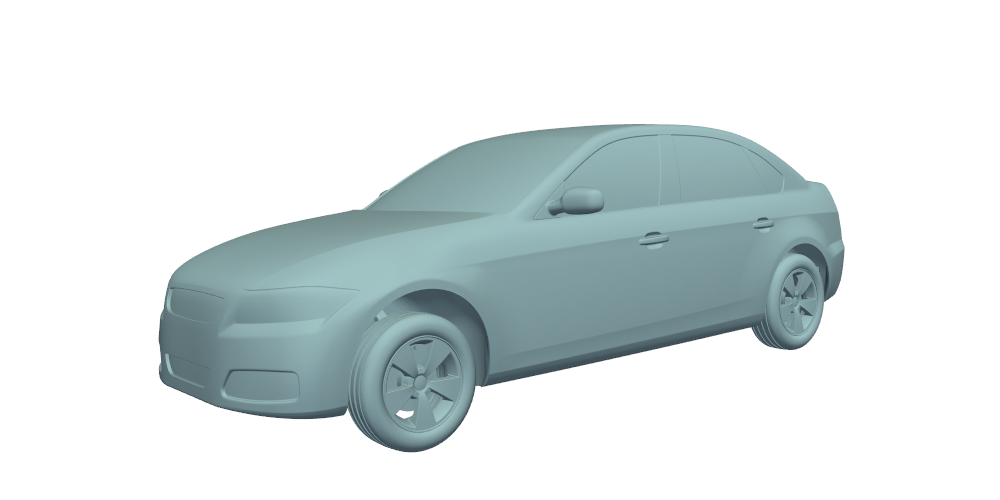
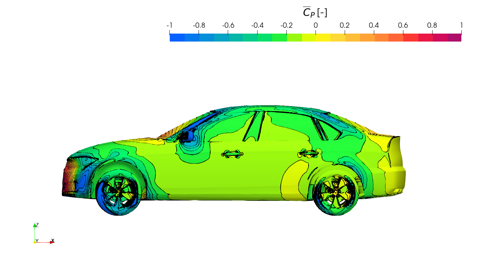
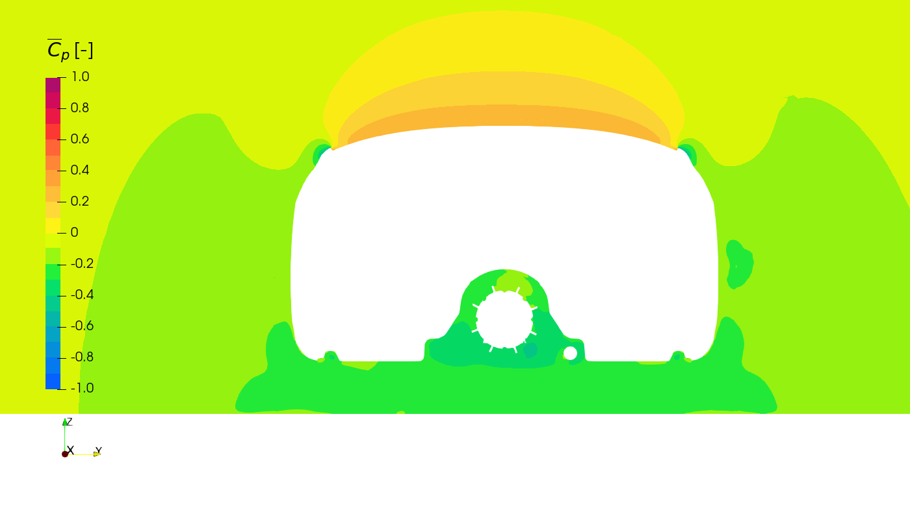
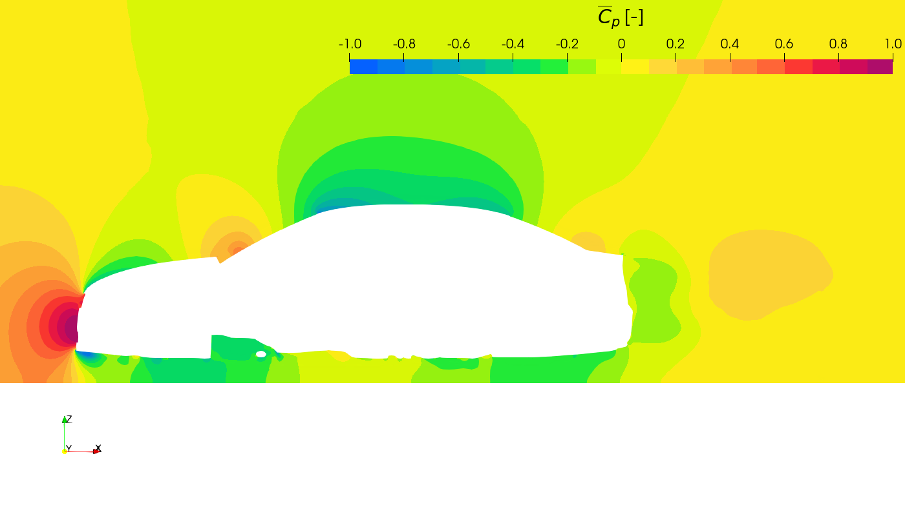
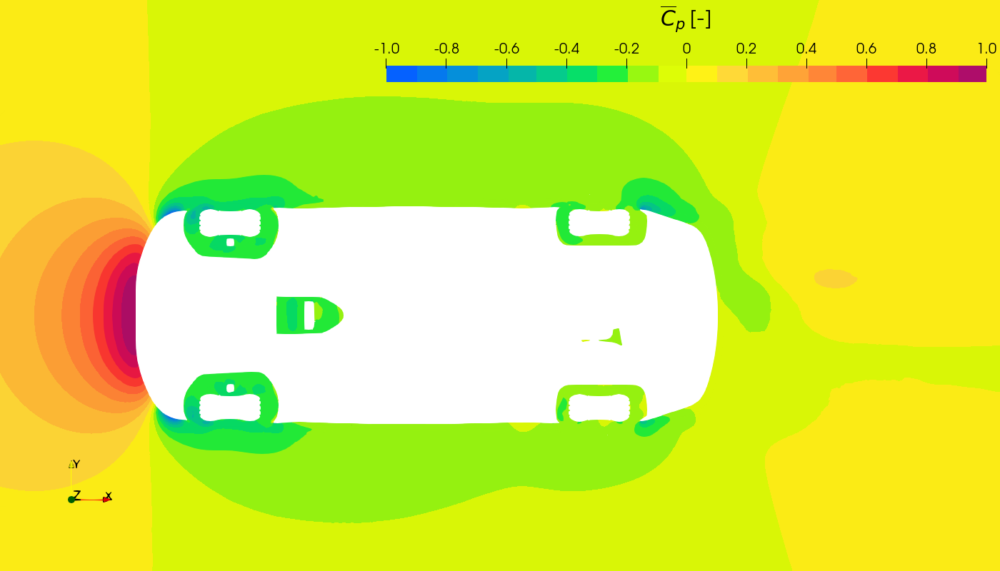

DrivAerML Dataset¶
The DrivAerML dataset is a publicly available dataset in Hugging Face licensed as CC BY-SA 4.0 and distributed separately to MLSimKit. It is a collection of high-fidelity CFD simulations showing different geometric variants of a body for automotive aerodynamics modeling. Please see the Hugging Face dataset for additional details.
Downloading the training data (354G)¶
You can download the data required for the training tutorials using Python with the huggingface_hub package:
pip install huggingface_hub
Then use this Python code to download the dataset:
from huggingface_hub import snapshot_download
snapshot_download(
repo_id="neashton/drivaerml",
repo_type="dataset",
local_dir="/path/to/dataset",
allow_patterns=[
"run_*/drivaer_*.stl",
"run_*/boundary_*.vtp"
]
)
Replace /path/to/dataset to your own directory.
The entire dataset is ~22.2TB and includes high-resolution meshes not required for training.
Understanding the dataset¶
The dataset contains 484 cases, each representing a unique geometry variant. The cases are organized into separate folders named run_1 to run_500, one for each simulation case.
There are 16 runs intentionaly left out. The variability in geometry across the 484 cases leads to a diverse set of flow physics, making this dataset well-suited for machine learning model development.
Within each run folder is a standard set of files:
run_1/
├── boundary_1.vtp
├── force_mom_1.csv
├── force_mom_constref_1.csv
├── geo_ref_i.csv
├── geo_parameters_1.csv
├── volume_1.vtu
├── drivaer_1.stl
├── images
│ ├── fig_run1_SRS_*_*Normal-*Normal-autocfd_1.png
│ ├── fig_run1_SRS_*_*Normal-*Normal_*.png
│ ├── fig_run1_SRS_iso-*.png
│ ├── fig_run1_SRS_surf-*.png
│ ├── fig_run1_SRS_*_*_grid.png
│ ├── fig_run1_evolution_*.png
│ └── fig_run1_solverStats_initialResidual.png
├── slices
│ ├── *Normal-autocfd_*.vtp
│ └── *Normal_*.vtp
drivaer_<run #>.stl- The surface geometry definition in STL formatboundary_<run #>.vtp- Simulation results on the surfacevolume_<run #>.vtu- Volumetric simulation outputsforce_mom_<run #>.csv- Time-averaged force and moment coefficients using varying frontal area/wheelbaseforce_mom_constref_<run #>.csv- Time-averaged force and moment coefficients using constant frontal area/wheelbasegeo_ref_<run #>.csv- Reference values for each geometrygeo_parameters_<run #>.csv- Reference geometric values for each geometryimages/- Folder containing images of various flow variables (e.g.CpMeanTrim,kresMeanTrim,magUMeanNormTrim,microDragMeanTrim) for slices of the domain at X, Y, and Z locations (msignifies minus,psignifies positive), as well as on the surface. It also includes evaluation plots of the time-averaging of the force coefficients (via the tool MeanCalc) and a residual plot illustrating the convergence.slices/- Folder containing .vtp slices of the domain in X, Y, and Z locations (msignifies minus,psignifies positive) that capture flow-field variables.
Here is an example Geometry.
{kind=link}
Here is an example visualization of mean pressure coefficient on the surface of the geometry.
{kind=link}
Slice Images Views¶
The slice images show simulation variables like pressure and velocity captured on 2D planes along the X, Y and Z axes. These are contained in the images folder for each case with grouping organizing the slice images by simulation output variable.
The variable names (CpMeanTrim, kresMeanTrim, magUMeanNormTrim, microDragMeanTrim) will be contained in each filename. There are multiple image sets showing different sliced views through the volume.
The main image sets are:
X-Axis Slices
Filename pattern: fig_run1_SRS_*_xNormal-2_xNormal_*.png
These are slices along the X-axis, showing the YZ-plane at different X positions. Useful for visualizing the flow as it passes over the geometry from front to back.
{kind=link}
Y-Axis Slices
Filename pattern: fig_run1_SRS_*_yNormal-2_yNormal_*.png
Slices along the Y-axis, showing the XZ-plane. Provides a top-down view of the geometry.
{kind=link}
Z-Axis Slices
Filename pattern: fig_run1_SRS_*_zNormal-2_zNormal_*.png
Slices along the Z-axis, showing the XY-plane. Gives a side view at different heights.
{kind=link}